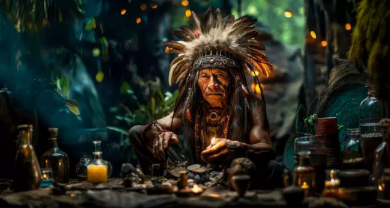

Já pensou na medicina alternativa como cura?
Os povos originários do Brasil dominavam a arte da cura através da natureza há muito tempo. Eles sempre viram a natureza como a maior curandeira, um livro vivo onde cada folha, raiz e flor guarda um segredo milenar. Vi-a como uma fonte não só para a cura de feridas e doenças, mas também para fortalecer o corpo e oferecer proteção espiritual. Esse significado tão profundo e essencial era passado de geração a geração.
A observação direta era a principal forma de aprendizado. Por exemplo, se um animal comia uma planta e ficava mais saudável ou se comportava de maneira diferente, isso era notado e transmitido como um indício de que aquela planta poderia ter propriedades curativas. Da mesma forma, os efeitos imediatos de uma planta, como sua reação ao ser ingerida ou aplicada na pele, eram analisados. Essa troca constante entre a observação da natureza e a prática de uso das plantas permitia o aperfeiçoamento do conhecimento sobre elas.
Além disso, muitos desses conhecimentos estavam profundamente ligados aos rituais espirituais. O uso das plantas não era apenas uma questão prática, mas também uma maneira de se conectar com os espíritos da floresta, que guiavam os pajés e curandeiros no uso correto das ervas. Plantas como o barbatimão (conhecido por suas propriedades cicatrizantes) ou o guaraná (que ajuda a aumentar a energia) eram vistas como presentes dos espíritos, e seu uso tinha um significado mais amplo, relacionado ao equilíbrio entre o ser humano e o mundo espiritual. Esse conhecimento se baseava na sabedoria coletiva e no respeito profundo pelas forças naturais. Por isso, era crucial que os curandeiros tivessem uma conexão direta com os espíritos da natureza para saber o momento exato de colher uma planta e como prepará-la de maneira correta, garantindo sua eficácia. O uso das ervas, então, era uma prática que não envolvia apenas o físico, mas também o espiritual, refletindo o entendimento indígena de que o corpo e o espírito são partes de um mesmo todo, interligados pelas forças da natureza.
Este site foi criado com o intuito que todos os brasileiros possam conhecer melhor a nossa história e compreender a importância da medicina alternativa e indígena. Conhecer nossas origens é fundamental para valorizar nossa cultura e construir um futuro mais consciente e conectado com nossas raízes.
Guia das Ervas
As divisões das ervas medicinais entre os povos indígenas do Brasil variam conforme cada etnia e sua visão de mundo. Em vez de classificá-las como na medicina ocidental, os indígenas as veem com base na relação entre o ser humano, os espíritos da floresta e os efeitos das plantas. Mesmo assim, algumas categorias gerais podem ser observadas.
Plantas de Cura (Nhe’e Ramo)

As Plantas de Cura (Nhe’e Ramo) são utilizadas pelos povos indígenas principalmente para tratar feridas e doenças do corpo. Elas possuem propriedades terapêuticas que ajudam na cicatrização de ferimentos, alívio de dores e no tratamento de inflamações, cada planta é escolhida de acordo com seu poder específico de curar o corpo, promovendo o equilíbrio físico e a saúde.